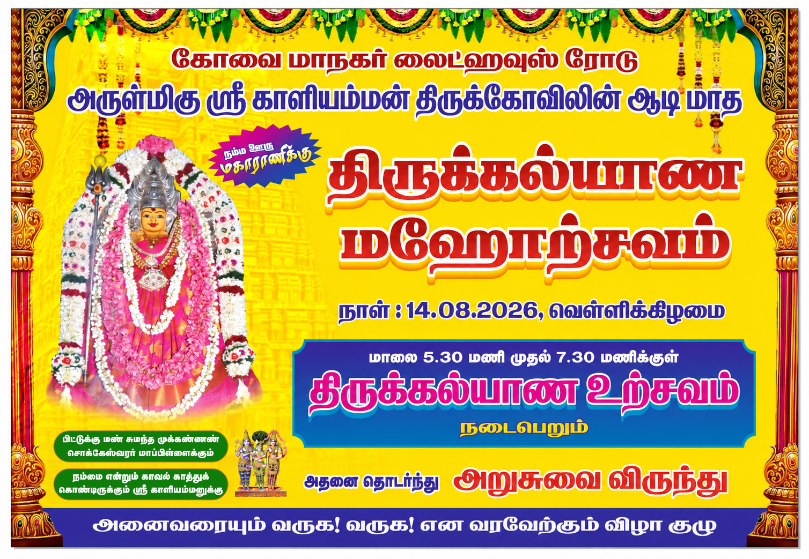
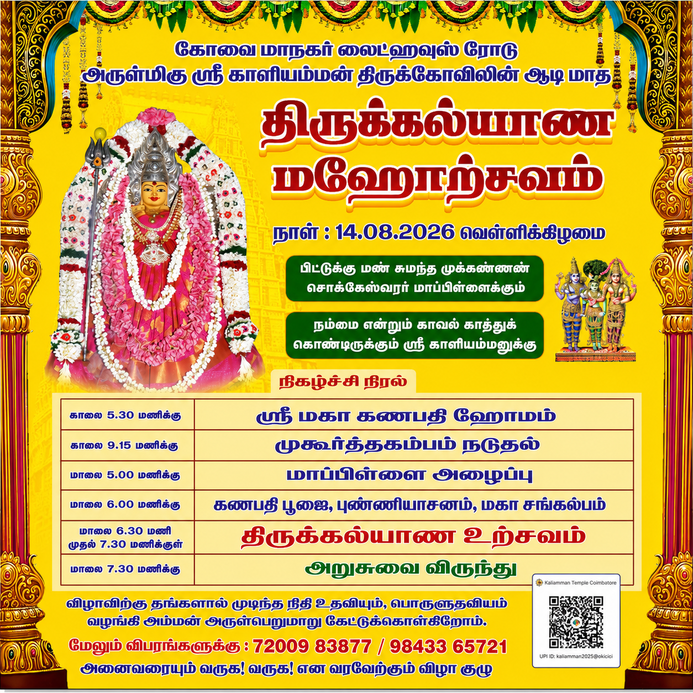

அன்புடையீர்,
| நாள் | நேரம் | நிகழ்ச்சி |
|---|---|---|
நாள் : 14.08.2026 - வெள்ளிக்கிழமை |
||
| 14.08.2026 | காலை 5.30 மணிக்கு | ஸ்ரீ மகா கணபதி ஹோமம் |
| காலை 9.15 மணிக்கு | முகூர்த்தகம்பம் நடுதல் | |
| மாலை 5.00 மணிக்கு | சித்தி விநாயகர் கோவில் வீதியில் உள்ள சித்தி விநாயகர் கோவிலில் இருந்து மாப்பிள்ளை மற்றும் பெண்வீட்டு சீர்வரிசை அழைத்து வருதல். | |
| மாலை 6.00 மணிக்கு | கணபதி பூஜை, புண்ணியாசனம், மகா சங்கல்பம் | |
| மாலை 6.30 மணி முதல் 7.30 மணிக்குள் | திருக்கல்யாண உற்சவம் | |